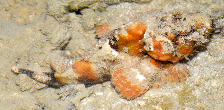
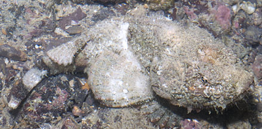
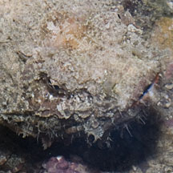

|
|
| fishes text index | photo index |
| Phylum Chordata > Subphylum Vertebrata > fishes > Family Scorpaenidae |
| False
stonefish Scorpaenopsis diabolus Family Scorpaenidae updated Oct 2020 Where seen? This rock-like fish is seldom seen, usually our southern shores on coral rubble areas near reefs or rocky shores. Features: 15-30cm long with a humped back. Small eyes that don't stick out of the head, with small shallow depression near the eyes, not as large and deep as the true Hollow-cheeked stonefish (Synanceia horrida). Wide horizontal mouth on a large rather flattened head. Large pectoral fins sometimes colourful. Spiky dorsal fin which carries venomous stings but it is not as dangerous as the real stonefish. When disturbed, it waddles away awkwardly on its pectoral fins. Sometimes mistaken for a stonefish (Family Synanceiidae) or the False scorpionfish (Centrogenys vaigiensis), a grouper, which looks very similar. Here's more on how to tell apart fishes that look like stones. |
 Kusu Island, Sep 19 Photo shared by Loh Kok Sheng on facebook. |
 Lazarus Island, Aug 12 |
 Shallow depression near the eye. |
|

|
| False stonefishes on Singapore shores |
On wildsingapore
flickr
|
| Other sightings on Singapore shores |
Links
|